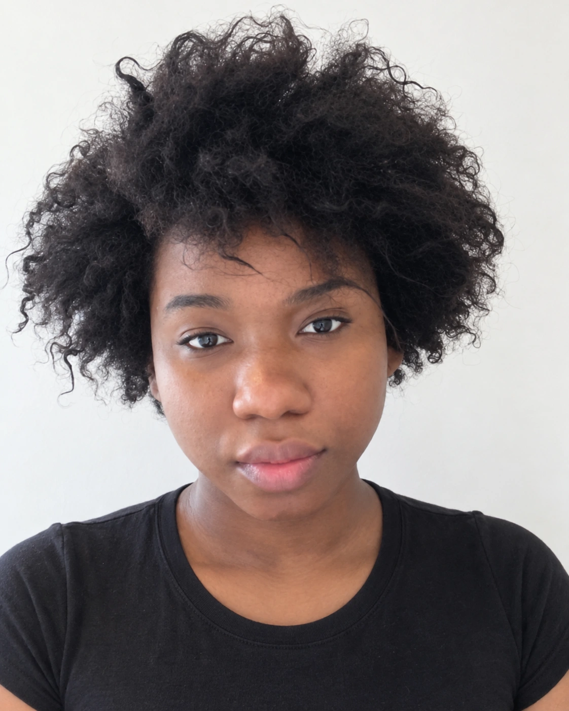

Photos
A restrained photo portfolio influenced by professional agency presentation but adapted for a multidisciplinary public profile. The categories make it easy for creative, corporate, speaking, media or casting-related visitors to find the kind of image they need without turning the page into an endless gallery.
Portfolio standard
The page is organised around useful image types rather than chronological posting. Categories run down the page, with small previews arranged side by side in rows that wrap to fit your screen. Select any image to view the full photograph. Earlier photographs remain available alongside newer additions, with edited studies identified in their captions.
Images should be current enough to be recognisable, appropriately lit and free from unnecessary location or personal metadata. The goal is not to impose a physical ideal; it is to give different industries a clear, accurate visual reference.
Modelling & wardrobe specifications
Measurements supplied for casting, styling and wardrobe planning; approximate and subject to confirmation at fitting.
Agency essentials
- Height
- 5 ft 8 in / approx. 173 cm
- Bust
- 42 in / approx. 107 cm
- Waist
- 35 in / approx. 89 cm (to reconfirm)
- Hips
- 46 in / approx. 117 cm
- Dress size
- UK 10–12 (self-reported; brand fit varies)
- Shoe size
- UK 6.5–7
Wardrobe & tailoring
- Underbust
- 32 in / approx. 81 cm
- Shoulder width
- approx. 60 cm (measurement method to verify)
- Shoulder circumference
- approx. 124 cm
- Neck
- 42.5 cm
- Upper arm
- 35 cm
- Sleeve length, shoulder to wrist
- approx. 60 cm
- Wrist
- 17 cm
- Back neck to waist
- approx. 54 cm
- Shoulder to groin
- approx. 64 cm
- Thigh circumference
- 69 cm
- Calf circumference
- 44–45 cm
- Ankle circumference
- 24 cm
- Hip to knee
- 52 cm
- Heel to knee
- 51 cm
- Knee to groin
- 38 cm
- Heel to groin (combined estimate)
- 89 cm — not a directly measured inseam
- Foot length
- 28 cm
- Foot girth at widest part
- 25 cm
- Head circumference
- 59 cm
Agency profile · additional criteria
Profile fields are maintained for agency enquiries. Unconfirmed details remain marked as such.
- Eye colour
- Brown
- Hair length
- Shoulder length
- Natural hair colour
- Dark brown / black
- Hair texture
- 1B / Type 3–4 coils (as supplied)
- Natural, unretouched digitals
- To confirm
- Current full-length photographs
- Available; date to confirm
- Travel availability
- To confirm
- Modelling experience
- Professional photoshoots
- Agency representation
- Yes
- Modelling categories / interests
- Variable
- Shoulder-to-shoulder width
- To verify
- Directly measured inseam
- To measure
- Front rise
- To measure
- Back rise
- To measure
- Bust-point distance
- To measure
- Shoulder to bust point
- To measure
- Arm span
- To measure
- Knee circumference
- To measure
For garment production, confirm key measurements and the measuring method with the stylist or tailor before cutting or ordering.
Additional photography portfolio
01 · Headshot / portrait
A clear face-forward portrait suitable for professional profiles, speaking pages, press references or biography use.
Open any photograph to view it at its full available size.



Upload headshot / portrait
02 · Full length
A neutral full-length image that shows overall presentation without relying on elaborate styling or scenery.
Open any photograph to view it at its full available size.


Upload full length
03 · Side profile
A clean profile-angle photograph, useful where a more traditional agency-style visual set is expected.
Open any photograph to view it at its full available size.

Upload side profile
04 · Three-quarter / mid-length
A flexible portrait crop for corporate, editorial and creative contexts.
Open any photograph to view it at its full available size.


Upload three-quarter / mid-length
05 · Natural / lifestyle
A relaxed but intentional image showing personality in an ordinary or contextual setting without disclosing private location details.
Open any photograph to view it at its full available size.


Upload natural / lifestyle
06 · Professional portraits / technical environment
A business-attire portrait provides the current professional reference, alongside a more informal office photograph. Photographs from technical, studio, speaking or other working environments can be added when available.
Open any photograph to view it at its full available size.

Upload professional / technical environment
07 · Creative / editorial
More expressive imagery for music, art, media or editorial contexts, while remaining consistent with the wider Manifold Grace identity.
Open any photograph to view it at its full available size.


Upload creative / editorial
Modelling profiles & Linktree
Portfolio refresh & agency arrangements
The Choice profile needs refreshing and may be reactivated. Portfolio updates and representation terms also need review with Boom. The priority is to discuss access to the agencies’ client networks and suitable work opportunities, alongside refreshing the online profiles.
These links are retained as references; they do not confirm current active representation or availability for bookings.
Bookings, profiles & visual links
Visual research
The modelling-style portfolio is distinct from visual research. Inspiration boards, photography references, planning and other image collections remain under Graceful Perspectives rather than being mixed into this professional set.
This keeps Photos useful to people who need a quick professional visual reference while Creative can carry the broader aesthetic and experimental material.
Graceful PerspectivesVisual research and curation